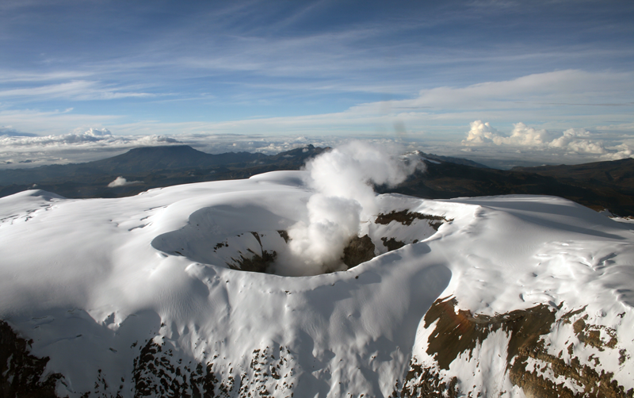

El Nevado del Ruiz es uno de los volcanes más importantes de Colombia. Sus paisajes nevados y ecosistemas de páramo atraen miles de visitantes cada año.
Caldas y Tolima
5.321 metros
Frío de montaña
Ecoturismo y senderismo